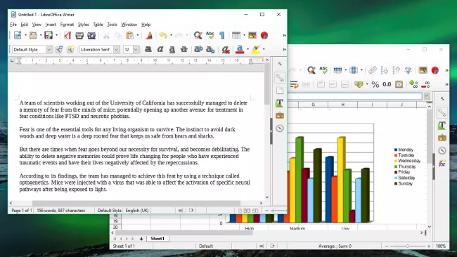
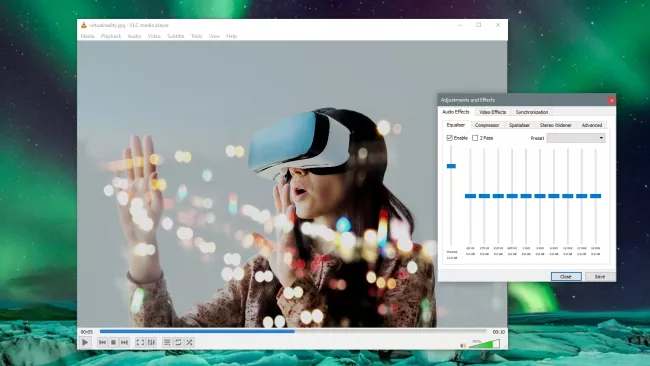
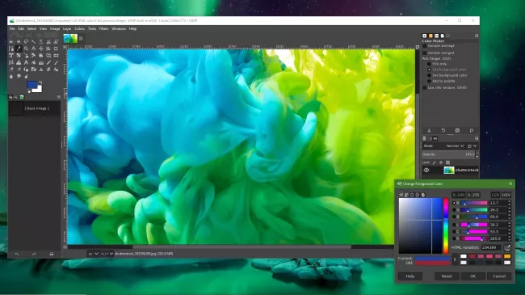
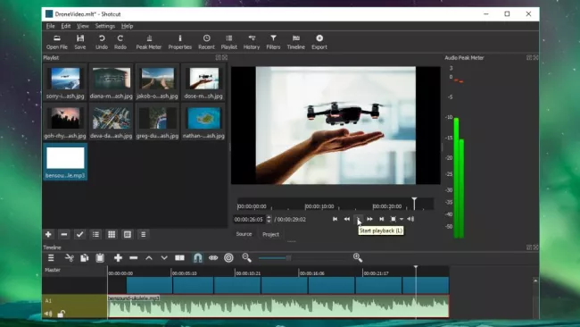
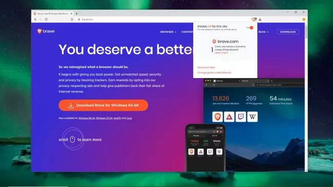

Software
5 Best Open Source Software of 2020 To Help Your Productivity
Free Options That Feel Premium
Open source software is any kind of program where the developer behind it chooses to release the source code for free. Whenever software has an open source license, it means anyone in the world can download, modify and distribute it without paying fees to its original creator.
Since the open source movement took off as a software development philosophy at the end of the 1990s, it’s changed the world. Estimates even suggest that a mind-blowing 96% of all web servers globally are running on some form of open source Linux operating system, for example.
It’s important to remember that open source doesn’t just mean “free”. Lots of companies release their software for free but maintain full copyright ownership of their code, so other developers aren’t able to modify it. By contrast, successful open source initiatives are built on the hard work of potentially thousands of collaborators who have voluntarily given up their time to create something awesome.
Such an accessible development system has some serious advantages. Open source software is often more secure because people from around the world scrutinize new releases and bugs get reported and addressed fast. Also, people are motivated to add cool new features to open source platforms which means open source software is often just as good, if not better, than competing pay-to-use programs.
In the list below you’ll find the world’s best open source software options, sorted by type. Each piece of software is feature-rich and highly customizable.
1. LibreOffice
With support for documents, spreadsheets, databases, presentations, diagrams, and mathematical formulae, LibreOffice is essentially a free version of the world’s most popular office productivity suite, Microsoft Office 365.
Some would actually argue that LibreOffice is the more fully-featured of the two, thanks to its dedicated developer community which is adding new tools and tricks all the time. For example, in the latest update, LibreOffice added a QR code generator tool so you can quickly create mobile-friendly links.
An alternative well-known open source office tool is Open Office, which offers many similar features to LibreOffice. The reason that LibreOffice has taken the top spot today is that it is much better at preserving Microsoft file formats. In other words, your formatting won’t get screwed up if you need to modify a document originally written in Microsoft Word.
The only downside to this awesome free office software is that editing documents collaboratively online is a bit tricky. Recently, an online editing option has been added but it still requires some technical know-how to implement.
2. VLC Media Player
VLC (or VideoLAN Client) media player is a lightweight application created by an open source development group known as the VideoLAN project. This video and media player has been leading the industry for years in terms of popularity, and it’s not hard to see why. You can use VLC media player to open audio and video files in just about any format without having to hunt down extra codecs.
VLC also works for streaming media such as podcasts and online radio stations. But perhaps the greatest VLC media player feature is playback control. You can change almost everything about how your media is displayed from hardware optimization to adding subtitle files from third-party sources.
Like some of the other amazing open source offerings mentioned here, VLC is constantly being upgraded with new goodies and features to explore. The latest updates to the free video player have included the ability to stream to other devices (like Chromecasts) and 360-degree video support for VR headsets.
3. GIMP
Beloved by Linux users since its original release in 1996, GIMP is one of the most famous and best-maintained open source software tools out there. This software is about as close to image editing power and flexibility of the Adobe Photoshop platform as you’re likely to get for free.
GIMP has built-in support for layers, filters, and automatic photo enhancement. It also makes it easy to create new graphic design elements and you can really take things to the next level by downloading plug-ins created by the broader GIMP open source community.
Just like Photoshop, GIMP has a fairly steep learning curve but anyone who puts in a bit of time is sure to appreciate its customizable interface and GPU hardware acceleration. However, if you’re looking for a simple free photo editor, check out Paint.NET instead. It’s not as powerful, but easier to get to grips with.
4. Shotcut
Shotcut is an open source free video editor. It’s one of those open source programs that really demonstrates how much a dedicated development community can improve a platform given time. In earlier versions, the Shotcut interface was a little bare, but later releases have added extra dockable panels, an intuitive timeline, and other touches that put Shotcut in the same league as premium video editors like Adobe Premiere Pro.
This video tool supports non-destructive audio and video editing, meaning you can compile effects without any quality loss. You can also use this platform to do color keying and grading operations, as well as more basic clip splicing and trimming.
Perhaps the coolest thing about Shotcut is its ability to work with more or less any format of video, audio, or photo media. That’s largely thanks to FFmpeg, an open source video framework that sits under the hood of the Shotcut program.
5. Brave
Built on top of Google’s open source Chromium project, Brave is a web browser that’s designed to keep your browsing activity private by automatically disabling website trackers and blocking pesky ads. For even more secure browsing, it has a built-in Tor function.
The big advantage of using Brave is that you can access many of the Google Chrome store’s thousands of extensions but enjoy a faster browsing experience than you’d get with a normal Chrome browser. That’s because Brave is less of a resource hog than Google’s regular Chrome package, giving it a performance boost when loading pages.
Another interesting thing about the Brave browser is something called Brave Rewards. The idea behind this feature is that you can opt in to see certain ads and receive a small Basic Attention Token crypto coin in return. Eventually, the developers behind Brave hope this will change the way advertising works on the internet.
Source: https://www.techradar.com/best/best-open-source-software